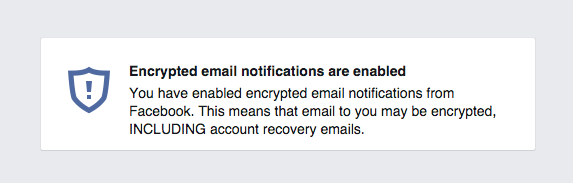

Facebook and PGP. A Pleasant Surprise.
This is a welcome surprise.
Facebook announced the ability for users to upload their public key so that they can receive their messages from Facebook in encrypted form.

This is remarkable in several ways:
It clearly demonstrates that PGP is the right way to go about encrypting email. Email is so prevalent precisely because it is the one message format where I don’t have to worry about what client or server you use. As long as I have your address I can communicate with you. The same goes for encryption. I want to be able to send encrypted messages to you without having to worry about which client or crypto tools you use.
Notifications from FB are now encrypted. That may or may not be important in real life. Many people would argue that sensitive information doesn’t belong on FB in the first place. But we can hopefully agree that putting more encrypted content onto the wire is a good thing in itself, more security, less surveillance.
More importantly, password reset emails are now encrypted. This is huge. A hacker who hijacks your email account by cracking your password is easily able to reset all your passwords and destroy your online identity. With encrypted password reset messages that isn’t possible anymore. Well done!
The most important implication to the more widespread adoption of encryption is the potential to use FB as a database for acquiring people’s public keys. If I know your FB name I can look for your public key at https://www.facebook.com/yourfacebookname/publickey/download.
So secure email products such as Whiteout Mail could add FB as another keyserver to query when acquiring keys (more on that here).